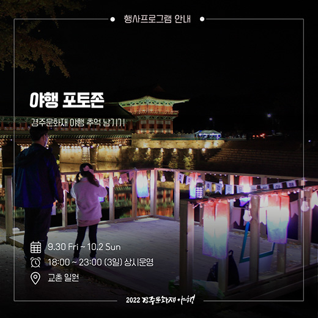
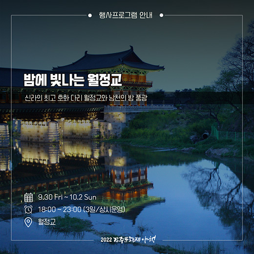
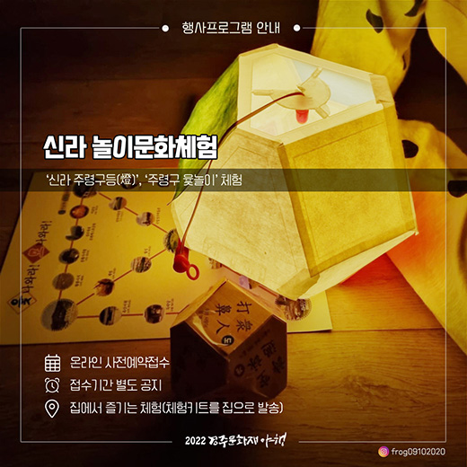
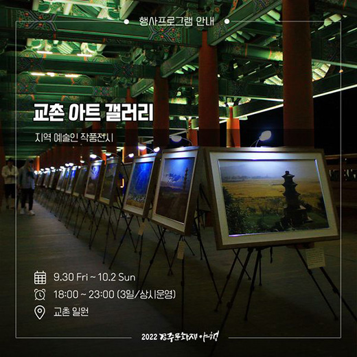
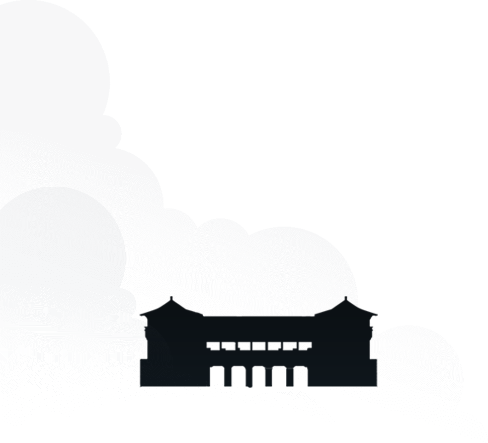

메인비주얼

경주
문화재
야행
"천년 역사를 품은 월성 달빛에 노닐다"
천년의 향기 그윽한 경주로
여러분을 초대합니다.
여러분을 초대합니다.
2022.3.5(금) ~ 2023.4.8(일)
- 공지사항
- 사전접수 안내
공지사항
사전접수 안내+
경주문화재야행 비디오
- 경주
- 문화재
- 야행
992년간 신라의 수도였던 경주,
경주의 역사는 신라의 역사입니다.
경주의 역사는 신라의 역사입니다.
함께 누비는 8야
움직이는구름
움직이는구름
움직이는구름
움직이는구름
함께 누비는 8야
경주의 밤을 즐기는 8가지 방법
경주문화재야행 SNS
경주가 들려주는 소식들

- "야행 포토존"
- #경주문화재야행 #추억 남기기

- "밤에 빛나는 월정교"
- #신라 최고의 #호화 다리

- "신라 놀이문화체험"
- #집에서 즐기는 #만들기 체험

- "교촌 아트 갤러리"
- #지역 예술인 #작품 전시

